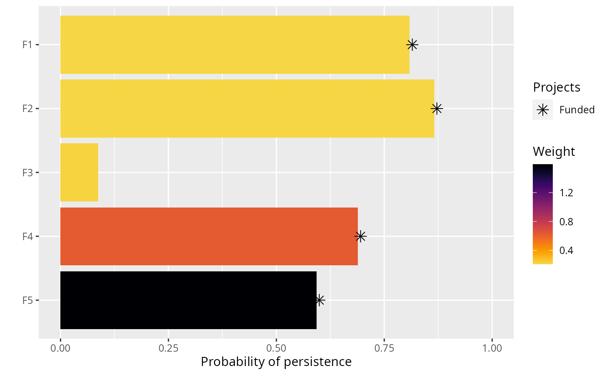

The oppr package a decision support tool for prioritizing conservation projects. Prioritizations can be developed by maximizing expected outcomes as a weighted sum (e.g., species richness), expected phylogenetic diversity, the number of features that meet persistence targets, or identifying a set of projects that meet persistence targets for minimal cost. Constraints (e.g., lock in specific actions) and feature weights can also be specified to further customize prioritizations. After defining a project prioritization problem, solutions can be obtained using exact algorithms, heuristic algorithms, or random processes. In particular, it is recommended to install the 'Gurobi' optimizer (available from https://www.gurobi.com) because it can identify optimal solutions very quickly. Finally, methods are provided for comparing different prioritizations and evaluating their benefits.
Details
This package has a vignette to showcase its usage. To view the
vignette, please use the code vignette("oppr", package = "oppr").
Installation
To make the most of this package, the ggtree and
gurobi R packages will need to be installed.
Since the ggtree package is exclusively available
at Bioconductor—and is not available on
The Comprehensive R Archive Network—please
execute the following command to install it:
source("https://bioconductor.org/biocLite.R");biocLite("ggtree").
If the installation process fails, please consult the
package's online documentation. To install the gurobi package, the
Gurobi optimization suite will first need to
be installed (see https://support.gurobi.com/hc/en-us/articles/4534161999889-How-do-I-install-Gurobi-Optimizer for instructions). Although
Gurobi is a commercial software, academics
can obtain a
special license for no cost. After installing the
Gurobi optimization suite, the gurobi
package can then be installed (see https://support.gurobi.com/hc/en-us/articles/14462206790033-How-do-I-install-Gurobi-for-R for instructions).
Citation
Please cite the oppr R package when using it in publications. To cite the package, please use:
Hanson JO, Schuster R, Strimas-Mackey M & Bennett JR (2019) Optimality in prioritizing conservation projects. Methods in Ecology & Evolution, 10: 1655–1663.
See also
Useful links:
Package website (https://prioritizr.github.io/oppr)
Source code repository (https://github.com/prioritizr/oppr)
Report bugs (https://github.com/prioritizr/oppr/issues)
Author
Authors:
Jeffrey O Hanson jeffrey.hanson@uqconnect.edu.au (ORCID)
Richard Schuster richard.schuster@glel.carleton.ca (ORCID, maintainer)
Matthew Strimas-Mackey mstrimas@gmail.com (ORCID)
Joseph Bennett joseph.bennett@carleton.ca (ORCID)
Examples
# \dontrun{
# load data
data(sim_projects, sim_features, sim_actions)
# print project data
print(sim_projects)
#> # A tibble: 6 × 13
#> name success F1 F2 F3 F4 F5 F1_action F2_action
#> <chr> <dbl> <dbl> <dbl> <dbl> <dbl> <dbl> <lgl> <lgl>
#> 1 F1_project 0.919 0.791 NA NA NA NA TRUE FALSE
#> 2 F2_project 0.923 NA 0.888 NA NA NA FALSE TRUE
#> 3 F3_project 0.829 NA NA 0.502 NA NA FALSE FALSE
#> 4 F4_project 0.848 NA NA NA 0.690 NA FALSE FALSE
#> 5 F5_project 0.814 NA NA NA NA 0.617 FALSE FALSE
#> 6 baseline_proj… 1 0.298 0.250 0.0865 0.249 0.182 FALSE FALSE
#> # ℹ 4 more variables: F3_action <lgl>, F4_action <lgl>, F5_action <lgl>,
#> # baseline_action <lgl>
# print action data
print(sim_features)
#> # A tibble: 5 × 2
#> name weight
#> <chr> <dbl>
#> 1 F1 0.211
#> 2 F2 0.211
#> 3 F3 0.221
#> 4 F4 0.630
#> 5 F5 1.59
# print feature data
print(sim_actions)
#> # A tibble: 6 × 4
#> name cost locked_in locked_out
#> <chr> <dbl> <lgl> <lgl>
#> 1 F1_action 94.4 FALSE FALSE
#> 2 F2_action 101. FALSE FALSE
#> 3 F3_action 103. TRUE FALSE
#> 4 F4_action 99.2 FALSE FALSE
#> 5 F5_action 99.9 FALSE TRUE
#> 6 baseline_action 0 FALSE FALSE
# build problem
p <-
problem(
sim_projects, sim_actions, sim_features,
"name", "success", "name", "cost", "name"
) %>%
add_max_wtd_sum_objective(budget = 400) %>%
add_feature_weights("weight") %>%
add_binary_decisions()
# print problem
print(p)
#> Project Prioritization Problem
#> actions: F1_action, F2_action, F3_action, ... (6 actions)
#> projects: F1_project, F2_project, F3_project, ... (6 projects)
#> features: F1, F2, F3, ... (5 features)
#> action costs: continuous values (between 0 and 103.226)
#> project success: proportion values (between 0.814 and 1)
#> objective: maximum weighted sum objective
#> targets: none specified
#> weights: feature weights
#> constraints: none specified
#> decisions: binary decision
#> solver: none specified
# solve problem
s <- solve(p)
#> Set parameter Username
#> Set parameter LicenseID to value 2738655
#> Set parameter TimeLimit to value 2147483647
#> Set parameter MIPGap to value 0
#> Set parameter NumericFocus to value 2
#> Set parameter Presolve to value 2
#> Set parameter Threads to value 1
#> Set parameter PoolSolutions to value 1
#> Set parameter PoolSearchMode to value 2
#> Academic license - for non-commercial use only - expires 2026-11-14
#> Gurobi Optimizer version 13.0.0 build v13.0.0rc1 (linux64 - "Ubuntu 24.04.2 LTS")
#>
#> CPU model: 11th Gen Intel(R) Core(TM) i7-1185G7 @ 3.00GHz, instruction set [SSE2|AVX|AVX2|AVX512]
#> Thread count: 4 physical cores, 8 logical processors, using up to 1 threads
#>
#> Non-default parameters:
#> TimeLimit 2147483647
#> MIPGap 0
#> NumericFocus 2
#> Presolve 2
#> Threads 1
#> PoolSolutions 1
#> PoolSearchMode 2
#>
#> Optimize a model with 27 rows, 27 columns and 62 nonzeros (Max)
#> Model fingerprint: 0x85f2486a
#> Model has 5 linear objective coefficients
#> Variable types: 5 continuous, 22 integer (22 binary)
#> Coefficient statistics:
#> Matrix range [9e-02, 1e+02]
#> Objective range [2e-01, 2e+00]
#> Bounds range [5e-01, 1e+00]
#> RHS range [1e+00, 4e+02]
#> Found heuristic solution: objective 0.6654645
#> Presolve removed 16 rows and 12 columns
#> Presolve time: 0.00s
#> Presolved: 11 rows, 15 columns, 24 nonzeros
#> Variable types: 0 continuous, 15 integer (15 binary)
#> Root relaxation presolved: 11 rows, 15 columns, 24 nonzeros
#>
#>
#> Root relaxation: objective 1.749045e+00, 11 iterations, 0.00 seconds (0.00 work units)
#>
#> Nodes | Current Node | Objective Bounds | Work
#> Expl Unexpl | Obj Depth IntInf | Incumbent BestBd Gap | It/Node Time
#>
#> * 0 0 0 1.7490448 1.74904 0.00% - 0s
#>
#> Explored 1 nodes (11 simplex iterations) in 0.00 seconds (0.00 work units)
#> Thread count was 1 (of 8 available processors)
#>
#> Solution count 1: 1.74904
#> No other solutions better than 1.74904
#>
#> Optimal solution found (tolerance 0.00e+00)
#> Best objective 1.749044775334e+00, best bound 1.749044775334e+00, gap 0.0000%
# print output
print(s)
#> # A tibble: 1 × 21
#> solution status cost obj F1_action F2_action F3_action F4_action F5_action
#> <int> <chr> <dbl> <dbl> <dbl> <dbl> <dbl> <dbl> <dbl>
#> 1 1 OPTIMAL 395. 1.75 1 1 0 1 1
#> # ℹ 12 more variables: baseline_action <dbl>, F1_project <lgl>,
#> # F2_project <lgl>, F3_project <lgl>, F4_project <lgl>, F5_project <lgl>,
#> # baseline_project <lgl>, F1 <dbl>, F2 <dbl>, F3 <dbl>, F4 <dbl>, F5 <dbl>
# print which actions are funded in the solution
s[, sim_actions$name, drop = FALSE]
#> # A tibble: 1 × 6
#> F1_action F2_action F3_action F4_action F5_action baseline_action
#> <dbl> <dbl> <dbl> <dbl> <dbl> <dbl>
#> 1 1 1 0 1 1 1
# print the expected probability of persistence for each feature
# if the solution were implemented
s[, sim_features$name, drop = FALSE]
#> # A tibble: 1 × 5
#> F1 F2 F3 F4 F5
#> <dbl> <dbl> <dbl> <dbl> <dbl>
#> 1 0.808 0.865 0.0865 0.688 0.592
# visualize solution
plot(p, s)

# }